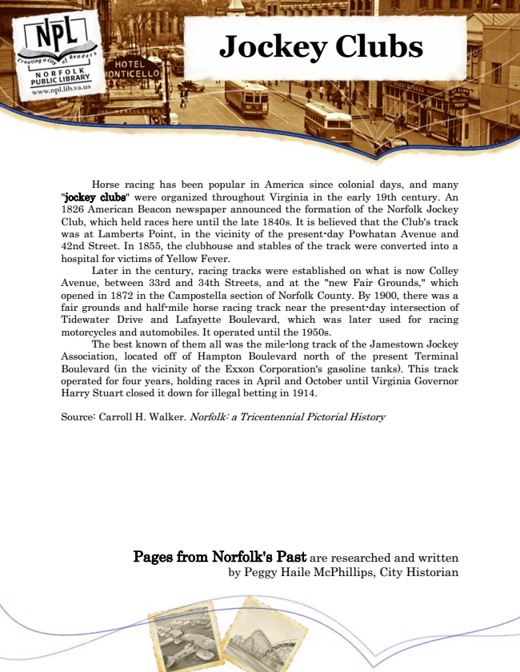

Jockey Clubs
Horse racing has been popular in America since colonial days, and many "jockey clubs" were organized throughout Virginia in the early 19th century. An 1826 American Beacon newspaper announced the formation of the Norfolk Jockey Club, which held races here until the late 1840s. It is believed that the Club's track was at Lamberts Point, in the vicinity of the present-day Powhatan Avenue and 42nd Street. In 1855, the clubhouse and stables of the track were converted into a hospital for victims of Yellow Fever.
Later in the century, racing tracks were established on what is now Colley Avenue, between 33rd and 34th Streets, and at the "new Fair Grounds," which opened in 1872 in the Campostella section of Norfolk County. By 1900, there was a fair grounds and half-mile horse racing track near the present-day intersection of Tidewater Drive and Lafayette Boulevard, which was later used for racing motorcycles and automobiles. It operated until the 1950s.
The best known of them all was the mile-long track of the Jamestown Jockey Association, located off of Hampton Boulevard north of the present Terminal Boulevard (in the vicinity of the Exxon Corporation's gasoline tanks). This track operated for four years, holding races in April and October until Virginia Governor Harry Stuart closed it down for illegal betting in 1914.
Source: Carroll H. Walker. Norfolk: a Tricentennial Pictorial History
Pages from Norfolk's Past are researched and written by Peggy Haile McPhillips, City Historian